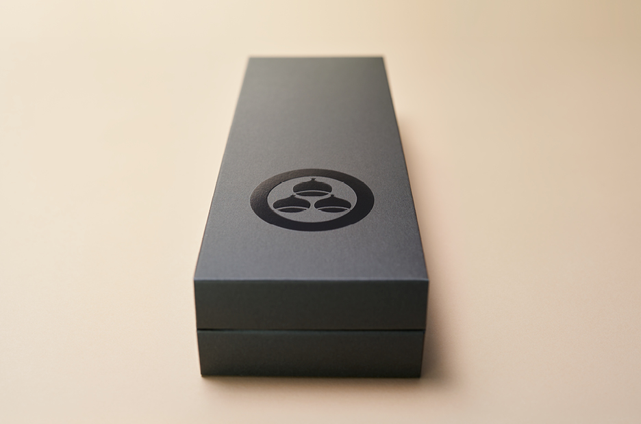
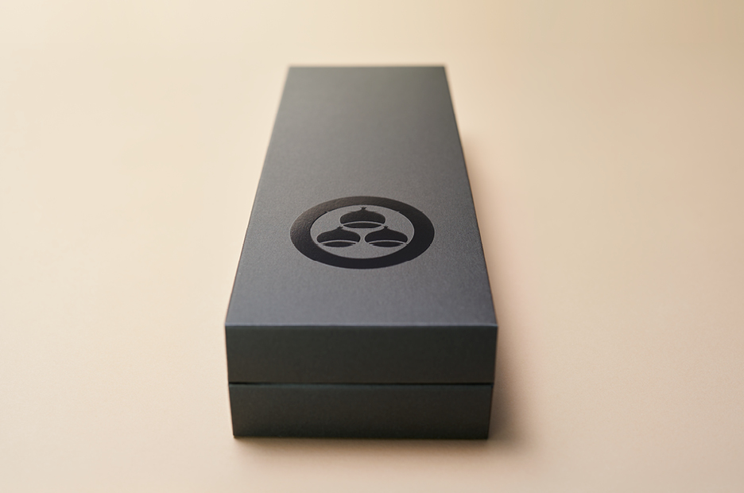
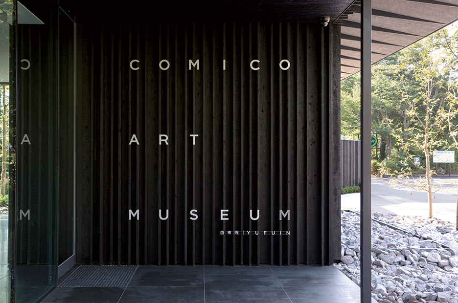
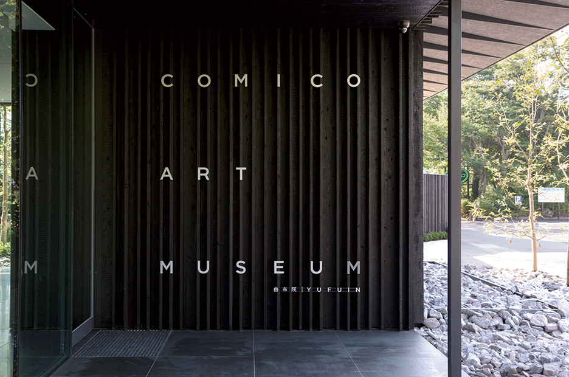

Who's who
Kenya Hara is an internationally acclaimed Japanese designer, one of
the most interesting protagonists on the international scene.
He graduated in design from the Musashino Art University of Kodaira in
1983, and immediately joined the NDC (Nippon Design Center).
In 1992 he founded Hara Design Institute working in the whole field of
design from advertising to branding, exhibit design, sign systems,
packaging, products, and books. His design communicates the essence
through the essential: The profound meaning of each reality through
symbolic visual solutions that have their origin in Japanese traditional
culture.
 


 
